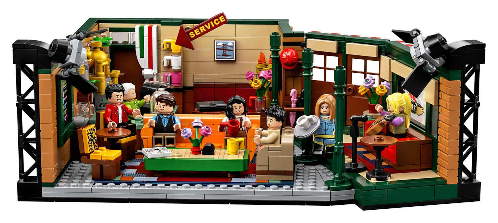
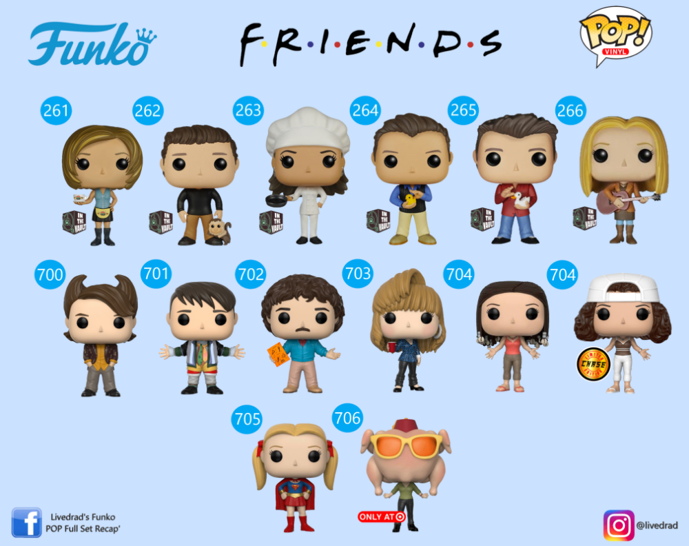

Friends is een erg groot begrip geworden in de wereld dat er zelfs spullen van worden gemaakt. Je hebt bijvoorbeeld een hele lego set van het koffiehuis Central Perk met Monica, Rachel, Phoebe, Ross, Chandler, Joey en zelfs Gunther! Deze kan je bestellen op bol.com en nog veel meer online winkels. Ook heb je een hele collectie van Funko POPs van de hele cast op verschillende tijden in de serie, zoals toen ze nog op college zaten en de keer in Barbados. De meeste merchandise kan je kopen op Amazon, zoals een kaartenset met alle afleveringen erop, sleutelhangers en zelfs kleding. De kleding heb je bij veel winkels, maar de meeste bij de Primark, maar ook bij de H&M heb je veel kleding van Friends en natuurlijk op internet.